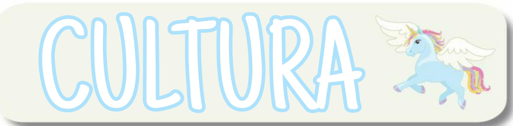
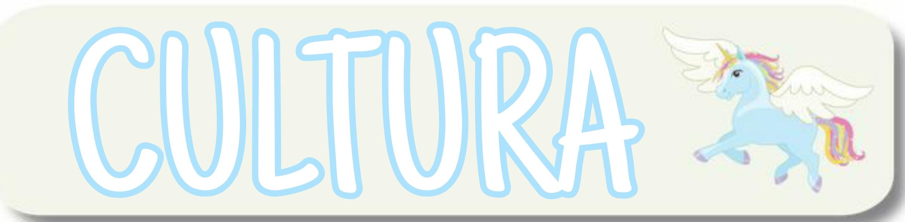
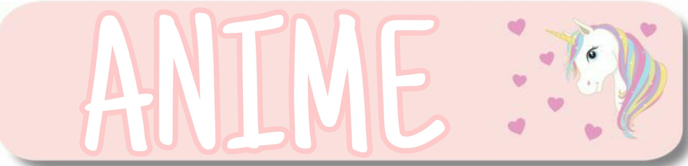
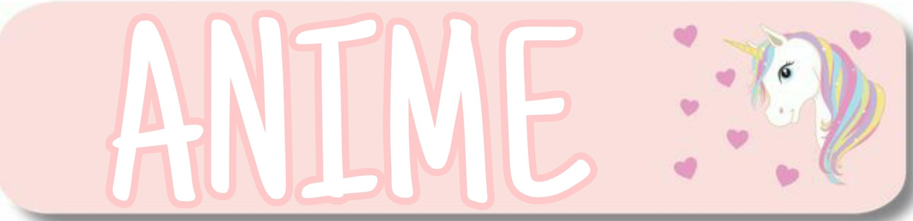
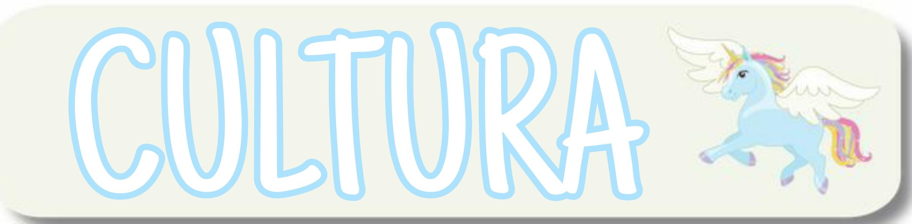
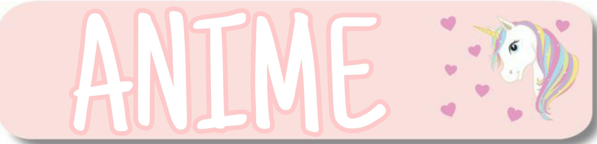
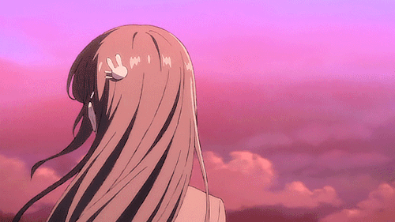

 




ANIME
MUNDO ANIME

Personajes del mundo del anime
Los personajes son dibujados con ojos grandes y delineados, sus colores de cabello son diferentes a lo habitual, con colores rojizos, rosados, azules y demás colores, cada uno con sus personalidades únicas, haciendo así que el anime sea tan original, esto hace que para muchos este género sea de sus favoritos, atrayendo a el público poco a poco más y más a sus historias, las cuales abarcan grandes amistades, grandes amores, así como amores imposibles, son un gran número de temáticas que el anime puede abarcar, muchas de las cuales posiblemente no sean tan comunes de ver en la vida real, esto es lo que hace tan único al anime que para algunas personas no son simplemente dibujos animados, sino que pasan a ser escapatorias de la realidad.
Libretos basados en historietas japoneses o libros coreanos
Ya que los coreanos cuentan con historietas o libros llamados Manhwas, estos vienen en diferentes tomos o ejemplares que cuentan una misma historia y son elaborados son textos e imágenes, los doramas son basados en estos para poder crearlos de forma real y reproducirlo en la televisión. Ejemplo de doramas basados en Manhwas se llama Birdie Buddy, esta historia tiene una duración de veinticuatro episodios y fue hecha por TVN una compañía televisiva de corea, la historia es basado en dos muchachos jugadores de golf profesional, cada uno con una vida diferente que se enamoran. De la misma manera cuando son basadas en historietas japoneses llamadas Mangas, son iguales a los Manhwas coreano y se adaptan a los doramas y son hechas en forma real. Ejemplo de dorama basado en una Mangas japonesa llamada Los Chicos Son Mejores Que Las Flores, consta de 25 episodios producida por Group Eight, es basada en una historia de una chica pobre que entra con una beca a un colegio de alta sociedad, donde es muy atacada por los estudiantes, pero ella no se rinde y encuentra el amor en uno de ellos, pero este amor tiene muchos obstáculos.
El anime tiene una estructura, primero tenemos el inicio que es el Open u Opening, donde nos da una introducción rápida del anime con una duración aproximadamente de un minuto y medio, donde lo que hacen es reproducir una canción y una animación la cual está resumiendo la temporada, luego de que se desenvuelve toda la historia y vamos llegando al final, tenemos el “Ending” donde también como lo es el Opening, es una banda ya con una canción más tranquila donde nos muestran los créditos de todos aquellos que intervinieron en la creación de esta animación, como lo son las personas que dibujaron, animaron, dieron voz a los personajes, así como producción y dirección, todo acompañado con una pequeña animación.
A lo largo de las temporadas tanto en el Opening como en el transcurso del capítulo e incluso en el Ending se encuentran bandas sonoras las cuales ambientan la animación, estas canciones normalmente se encuentran disponibles en lo que llamamos SOUNTRACK. Muy de vez en cuando, en algunos capítulos, encuentras los llamados BONUS, este término normalmente es usado cuando los personajes interpretan una canción por ellos mismos dentro del anime, formando parte de la historia o solo por dar un toque ya sea cómico, romántico o emotivo, según sea el estilo del anime, esto también se puede presentar como un musical.

 @mikuu_ana
@mikuu_ana